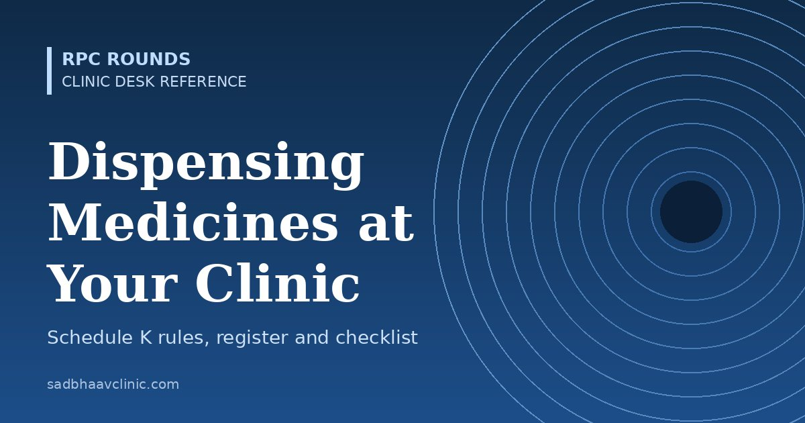

For: Practising ophthalmologists
Last updated: November 2026
Key points in 60 seconds
Many Indian doctors, eye surgeons included, hand patients their drops and tablets at the clinic. It saves the patient a trip, the right medicine reaches the right eye, and you can show them how to use it. The law allows this, but only within limits. This guide sets out the central rules as they stood in November 2026, with a checklist, a register format and a sample label.
The short answer
| Law | What it says about doctors supplying medicines |
|---|---|
| Drugs and Cosmetics Act, 1940, Chapter IV | Sale, stocking and distribution of drugs need a licence. Breaking this can lead to prosecution under sections 18 and 27. |
| Drugs Rules, 1945, Schedule K, entry 5 | Exempts drugs supplied by a registered medical practitioner to his own patient (and Schedule C drugs specially prepared for another practitioner's patient at his request), subject to conditions listed below. |
| Pharmacy Act, 1948, section 42 | Only a registered pharmacist may compound, prepare, mix or dispense a doctor's prescription. The proviso exempts a medical practitioner dispensing for his own patients; dispensing for another doctor's patients needs State Government sanction. Penalty: up to 3 months' imprisonment, a fine up to ₹2 lakh, or both. |
| Indian Medical Council (Professional Conduct, Etiquette and Ethics) Regulations, 2002 | A doctor should not run an open shop selling medicines for other doctors' prescriptions. Supplying medicines to your own patients is not unethical as long as there is no exploitation. Prescriptions should use generic names (2016 amendment). |
| NMC Registered Medical Practitioner (Professional Conduct) Regulations, 2023 | Notified in August 2023 but kept in abeyance by the NMC within weeks, so the 2002 regulations continue to guide conduct. |
| Drugs (Prices Control) Order, 2013 and Legal Metrology rules | No medicine may be sold above its printed MRP. |
Schedule K entry 5 lets you supply your own patients only if you:
Most eye drops and tablets you dispense are Schedule H (prescription-only). For these you must also:
Schedule H1 drugs (several antibiotics, including moxifloxacin and levofloxacin) carry a separate register rule for licensed chemists. Under the doctor exemption the same Schedule K register covers them, but it is wise to add the batch number and keep the entry as detailed as a chemist's H1 register would be.
| Entry no. | Date and time | Patient name, age, address or ID | Medicine (name or ingredients) and strength | Batch and expiry | Quantity supplied | Dose and directions | Prescribed by | Supplied by (sign) |
|---|---|---|---|---|---|---|---|---|
| 0412 | 17/11/2026 11:20 | R. Patel, 64, Ahmedabad, OPD 23781 | Moxifloxacin 0.5% eye drops | MX2311 / 08-2027 | 1 x 5 ml | 1 drop 4 times a day, right eye, 7 days | Dr D. Patel | (sign) |
| 0413 | 17/11/2026 11:35 | S. Shah, 58, Ahmedabad, OPD 23790 | Timolol 0.5% eye drops | TM118 / 03-2028 | 1 x 5 ml | 1 drop twice a day, both eyes | Dr D. Patel | (sign) |
| 0414 | 17/11/2026 12:05 | K. Desai, 71, Gandhinagar, OPD 23802 | Prednisolone acetate 1% eye drops | PA0907 / 01-2028 | 1 x 10 ml | As per taper sheet, left eye | Dr D. Patel | (sign) |
A bound register with printed page numbers is best. If you keep it on a computer, make sure entries cannot be changed later without a trace, take regular backups, and be ready to print it for an inspector.
| Item often supplied in eye clinics | How to check its schedule | Points to watch |
|---|---|---|
| Antibiotic drops and ointments (moxifloxacin, gatifloxacin, tobramycin, chloramphenicol) | Prescription-only. Moxifloxacin, levofloxacin and some other antibiotics are listed in Schedule H1; the pack carries a red "Rx" with a boxed warning | Register entry and label; some chloramphenicol drops need refrigeration |
| Steroid drops (prednisolone, dexamethasone, loteprednol, difluprednate) | Schedule H ("Rx" on the pack) | Give a written taper; record the quantity |
| Glaucoma drops (timolol, latanoprost, brimonidine, dorzolamide, combinations) | Schedule H | Unopened latanoprost is usually stored at 2 to 8 °C; read each label |
| NSAID drops, cycloplegics and mydriatics | Schedule H | Atropine for children: label the strength clearly |
| Antiviral, antifungal and antiallergic drops | Mostly Schedule H; some antiallergics are not scheduled | Check the label of each brand |
| Tablets (acetazolamide, oral antibiotics, antivirals, steroids, pain relief) | Schedule H or H1 for most; read the pack | Strip label with name and directions; avoid cutting strips so the batch and expiry are lost |
| Lubricant drops, lid wipes, vitamins | Many are not scheduled, but buy them with invoices like any other stock | Still keep within expiry and record the sale on the bill |
| Schedule X, narcotic and psychotropic drugs | Pack shows "XRx" | Do not stock these for supply under the doctor exemption; they need separate licences and records |
The law sets the limits; good systems keep you within them and stop money leaking through expired stock, errors and missing bills. A small eye clinic can run its dispensing counter well with one trained assistant, a register and a monthly routine.
Stock only what you prescribe regularly. Most eye clinics manage with 30 to 60 items. Fewer items means fewer expiries and fewer mix-ups.
| Group | Typical items to consider |
|---|---|
| Antibiotic drops and ointment | A fluoroquinolone (moxifloxacin), one aminoglycoside or chloramphenicol, an antibiotic ointment |
| Steroid and combination drops | Prednisolone acetate 1%, a soft steroid (loteprednol or fluorometholone), one antibiotic-steroid combination |
| NSAID drops | Nepafenac or bromfenac or ketorolac (one or two) |
| Glaucoma drops | Timolol, a prostaglandin (latanoprost), brimonidine, dorzolamide or brinzolamide, one fixed combination |
| Lubricants | Carboxymethylcellulose, a preservative-free option, a gel or ointment for night use |
| Antiallergic | Olopatadine or another mast-cell stabiliser/antihistamine |
| Cycloplegic and mydriatic | Homatropine or cyclopentolate; atropine for children (stated strength) |
| Tablets | Acetazolamide with potassium, an oral antibiotic, paracetamol, an oral antiviral if you treat herpes zoster, vitamin supplements if you prescribe them |
| Post-cataract kit | The drops you use after surgery, a shield and a printed timetable in the patient's language |
| Tool | How to use it |
|---|---|
| Stock register or software | Enter every purchase and every sale; the balance should match the shelf |
| Minimum and reorder levels | For each item, set a reorder level (for example 2 weeks of use) and order when stock falls to it |
| Monthly stock count | Count fast movers monthly and everything quarterly; investigate differences |
| ABC analysis | The few items that make up most of your spending (A items) deserve the closest watch and price comparison |
| Expiry list | Each month, list items expiring in the next 3 months; use them first or return them |
| Recalls and NSQ alerts | Check the CDSCO monthly list of drugs found Not of Standard Quality and remove any matching batch at once |
Eye-drop cap colours. In the USA, cap colours follow an American Academy of Ophthalmology convention; many Indian brands follow it, but not all. Use it as a quick visual check, never as the only check. See the full AAO cap colour code.
| Cap colour | Drug group |
|---|---|
| Tan | Anti-infectives |
| Pink | Steroids |
| Grey | NSAIDs |
| Red | Mydriatics and cycloplegics |
| Green | Miotics |
| Yellow or blue | Beta blockers (yellow often 0.5%, blue 0.25%) |
| Purple | Adrenergic agonists |
| Orange | Carbonic anhydrase inhibitors |
| Turquoise | Prostaglandin analogues |
Record any suspected adverse drug reaction and report it to the Pharmacovigilance Programme of India (PvPI) using the suspected adverse drug reaction form, online or through the helpline. Keep patient complaints about a product, with batch number, and inform the supplier.
Not allowed under the doctor exemption: a pharmacy counter or window facing the public; signboards advertising medicines; supplying people you have not seen as patients; filling other doctors' prescriptions; supplying other doctors, clinics, opticians or shops; selling online; selling physician samples; buying from unlicensed sources or without invoices; selling above MRP; keeping expired stock among usable stock.
If you want a chemist shop that serves any prescription (for example a pharmacy inside your hospital that also serves outside patients), apply to your State drugs regulator (in Gujarat, the Food and Drugs Control Administration). The usual retail licences are Form 20 and Form 21 under the Drugs Rules, with separate forms for wholesale and for Schedule X. The shop needs a registered pharmacist in charge, minimum floor area, and proper storage, including a refrigerator. Check the current fees and forms on your State portal before applying.
Tick what is already true in your clinic. Nothing is saved or sent anywhere.
| Case | What happened | Lesson |
|---|---|---|
| S. Athilakshmi v State, represented by the Drugs Inspector, Supreme Court, 2023 (2023 LiveLaw (SC) 194) | A dermatologist in Chennai was prosecuted after an inspector seized a small stock of medicines, lotions and ointments from her clinic. The Court quashed the case: she was a registered practitioner, the quantity was small, there was no open shop, and she had pharmacy invoices for the drugs. | Small stocks for your own patients, bought with invoices, fall within Schedule K. |
| Palani v State of Tamil Nadu, Supreme Court, 2024 INSC 110 | A doctor's clinic held allopathic medicines without proper documentation. Intent to sell or distribute was not proved, so the Court set aside the prison sentence for a related offence, but kept a fine of ₹1 lakh. | Paperwork matters. Missing invoices and records can still cost you, even when the stock is small. |
Chemists' associations have asked the government to remove or narrow the doctor exemption, and Schedule K itself is amended from time to time (in June 2026 cough syrups were removed from another entry of Schedule K, ending their over-the-counter status). Check the current Gazette text before relying on any detail.
Can my nurse or assistant hand over the medicines? The exemption is for the doctor. In practice staff often pack and hand over under the doctor's direction, but the doctor remains responsible for what is supplied, the label and the register. Check the drops against the prescription before they reach the patient.
Can I supply a patient referred by another doctor? Only once that person is your patient, examined by you and prescribed by you. Filling the other doctor's prescription is dispensing for another practitioner's patient, which needs a pharmacy licence.
Do I need a licence to keep drugs I use in the clinic or theatre? Drugs used by you during treatment, such as dilating drops, local anaesthetic or theatre drugs, are for your own patients. Buy them with invoices, store them correctly and keep theatre records.
Can I keep a small stock for a satellite clinic? Yes, if the same conditions are met there and the drugs are for patients seen at that clinic. Moving stock between separate businesses can look like distribution.
What will a Drugs Inspector ask for? Expect to show your registration certificate, purchase invoices, the dispensing register, prescriptions, storage and fridge logs, and expired-stock records.
Is this legal advice? No. It is a summary for clinicians. State rules and local practice vary; for a specific situation, ask your State Drugs Control Department or a lawyer.
📘 Want more exam-ready material? See Most Commons in Ophthalmology on Kindle, or browse all my books.
How to cite this page
Patel D. Can Doctors Dispense Medicines in India? Self-Dispensing Rules for Clinics: Schedule K, Pharmacy Act, Register and Labels. RPC Rounds (Sadbhaav Eye Clinic). Updated November 2026. Available at: https://www.sadbhaavclinic.com/doctor-self-dispensing-medicines-rules-india.html. Accessed [date].
Looking for an eye specialist in Ahmedabad? Eye Department at Sadbhaav or book a consultation with Dr. Dhaval Patel.